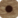

I'm sorry! This version of Ataxx is implemented in JavaScript. Therefore you have to enable it to enjoy the game. Thanks!
...is a Reversi-like game. Your goal is to have more pieces than your opponent at the end of the game. The opponent is cunning Artificial Intelligence!
You can read the rules and learn how to play below.
Game over!
The player can make two kinds of moves, either
Once the move is made, all opponent's pieces adjacent to the new or moved piece are captured, ie. they are converted to the color of the moving player.
If the player has no legal moves, she has to pass. However, if the player has legal moves, she cannot pass her turn.
The game ends when the board is full or one of the players loses all her pieces; the player with more pieces wins.
You'll play with the light pieces and the Artificial Intelligence uses the dark pieces .
Placing a new piece is done by clicking an empty square. These are marked with a little dot . To jump you have to first select the piece you want to move and after that click where you want the piece moved.
Your turn is passed automatically, if no legal moves exist.
Jumping piece is marked with a dot . You can cancel the jump by clicking the piece again.
Last move by the Artificial Intelligence is marked with, you guessed it!, a dot .